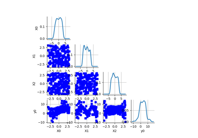
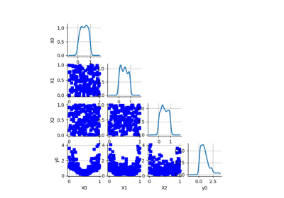
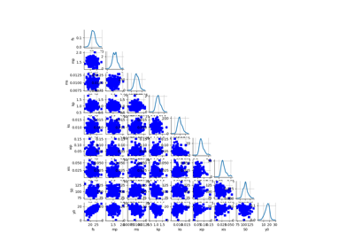
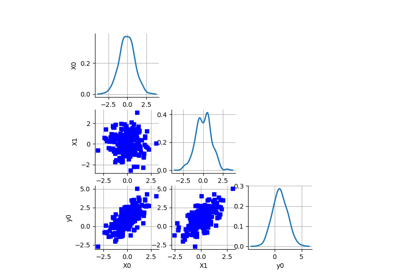
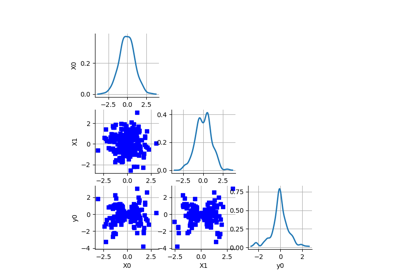
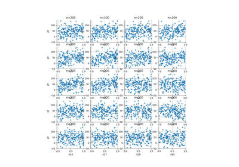
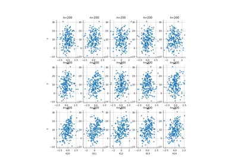

Sensitivity problems¶


Benchmark the Ishigami test function
Benchmark the Ishigami test function


Benchmark the Dirichlet test function
Benchmark the Dirichlet test function


Benchmark the NLOscillator test function
Benchmark the NLOscillator test function

Benchmark the gaussian sum test function
Benchmark the gaussian sum test function

Benchmark the gaussian product test function
Benchmark the gaussian product test function

Benchmark the Morris test function
Benchmark the Morris test function

Benchmark the Oakley-O’Hagan test function
Benchmark the Oakley-O'Hagan test function